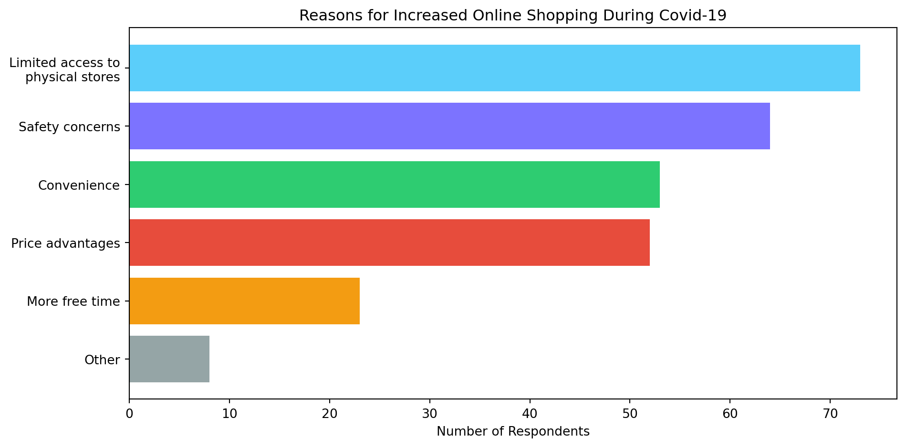
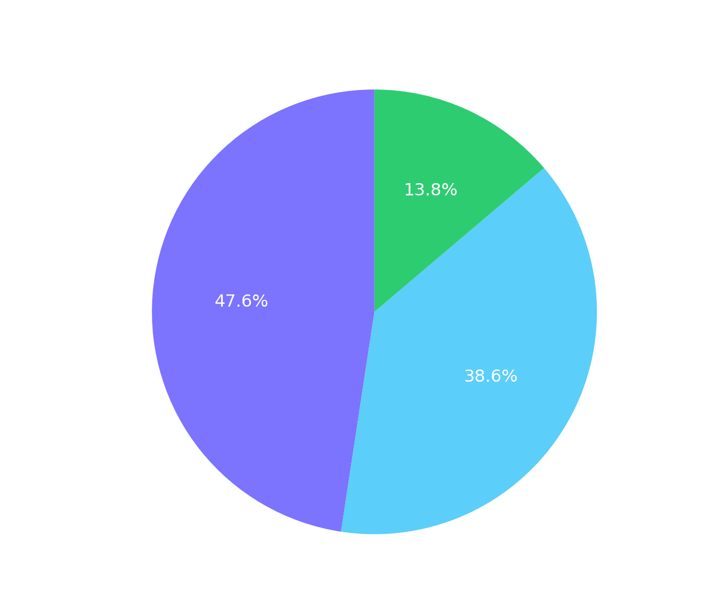
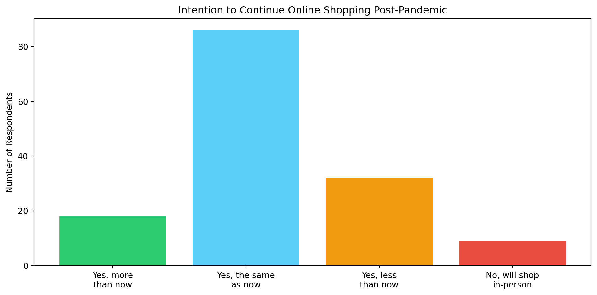

Bachelor thesis investigating the pandemic’s impact on German consumer behavior in e-commerce.
Author
Woo-Sung Hollenhorst
Published
May 28, 2024
Overview
This bachelor thesis explores how the Covid-19 pandemic affected online shopping behavior in Germany. Using a mixed-methods approach combining a survey of 191 participants with 6 in-depth interviews, the study analyses shifts in shopping frequency, spending patterns, product category preferences, and consumer attitudes.
import matplotlib.pyplot as pltreasons = ['Limited access to\nphysical stores', 'Safety concerns', 'Convenience', 'Price advantages', 'More free time', 'Other']counts = [73, 64, 53, 52, 23, 8]colors = ['#5bcefa', '#7c73ff', '#2ecc71', '#e74c3c', '#f39c12', '#95a5a6']fig, ax = plt.subplots(figsize=(10, 5))bars = ax.barh(reasons, counts, color=colors)ax.set_xlabel('Number of Respondents')ax.set_title('Reasons for Increased Online Shopping During Covid-19')ax.invert_yaxis()for bar, val inzip(bars, counts): ax.text(bar.get_width() +1, bar.get_y() + bar.get_height()/2, str(val), va='center', color='white')plt.tight_layout()plt.show()

Store Preference: Local vs International
import matplotlib.pyplot as pltlabels = ['No Preference', 'International', 'Local']values = [47.6, 38.6, 13.8]colors = ['#7c73ff', '#5bcefa', '#2ecc71']fig, ax = plt.subplots(figsize=(7, 7))wedges, texts, autotexts = ax.pie(values, labels=labels, colors=colors, autopct='%1.1f%%', startangle=90, textprops={'color': 'white', 'fontsize': 12})ax.set_title('Preference: Local vs International Online Stores', fontsize=14, color='white')plt.tight_layout()plt.show()

Future Shopping Intentions
import matplotlib.pyplot as pltintentions = ['Yes, more\nthan now', 'Yes, the same\nas now', 'Yes, less\nthan now', 'No, will shop\nin-person']counts = [18, 86, 32, 9]colors = ['#2ecc71', '#5bcefa', '#f39c12', '#e74c3c']fig, ax = plt.subplots(figsize=(10, 5))bars = ax.bar(intentions, counts, color=colors)ax.set_ylabel('Number of Respondents')ax.set_title('Intention to Continue Online Shopping Post-Pandemic')for bar, val inzip(bars, counts): ax.text(bar.get_x() + bar.get_width()/2, bar.get_height() +1, str(val), ha='center', color='white')plt.tight_layout()plt.show()

Key Findings
81.4% of respondents reported increased online shopping activity during the pandemic
Home & Garden saw the largest growth at 246% increase in online purchases
Limited store access was the top reason for increased online shopping, followed by safety concerns
International stores were preferred over local ones by nearly 3 to 1 among those with a preference
59% intended to maintain their pandemic-level online shopping activity going forward
Reflection
This bachelor thesis was my first experience conducting such in-depth independent academic research from start to finish. Designing the mixed-methods approach, combining a survey of 191 participants with in-depth interviews, taught me how quantitative and qualitative data complement each other. The survey gave me the broad patterns, but it was the interviews that revealed the emotions and reasoning behind the numbers.
One of the biggest challenges was collecting data on the streets of Frankfurt, Heidelberg, and Bensheim. Approaching strangers, dealing with refusals, and managing different survey conditions.
Looking back, I would improve the sample diversity and increase the interview pool. The results skewed heavily towards younger demographics, which limited the conclusions I could draw about older populations. This experience gave me a deeper understanding for research design and the importance of addressing bias early.
This project ultimately sparked my interest in data analytics and consumer behavior, two fields I am now pursuing in my MSc at DCU. The skills I developed here, from data collection to statistical analysis, and academic writing, continue to contribute to my work today.